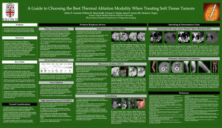

Jeffrey P. Guenette / Scientific & Educational Exhibits
A Guide to Choosing the Best Thermal Ablation Modality When Treating Soft Tissue Tumors
Guenette JP, Mayo-Smith WW, Healey TT, Iannuccilli JD, Dupuy DE
Radiological Society of North America 98th Scientific Assembly and National Meeting
November 25-30, 2012, Chicago, IL
 Abstract:
PURPOSE/AIM: To provide a review of the relevant basic science and to share experience that will help interventional radiologists consistently choose the optimal thermal ablation modality.
CONTENT ORGANIZATION: 1. Review of radiofrequency ablation, microwave ablation, and cryoablation biophysics; 2. Review of thermal ablation monitoring capabilities; 3. Anatomic considerations; 4. Tumor characteristic considerations; 5. Treatment goal considerations; 6. Pictorial review of interesting and demonstrative cases; 6. Summary of presented material.
SUMMARY: Research has shown the safety and efficacy of radiofrequency ablation, microwave ablation, and cryoablation in the treatment of a wide variety of tumors, however studies comparing the modalities are limited, many tumors amenable to ablation are unusually located, and the effects of and ability to monitor each modality varies significantly. By properly considering modality biophysics and monitoring, tumor characteristics, surrounding anatomy, and treatment goals, the interventional radiologist will be able to optimize outcomes on an ablationbyablation basis.
Return to Home Page